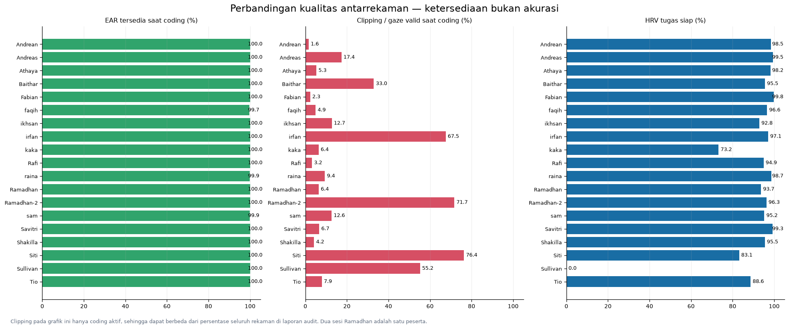
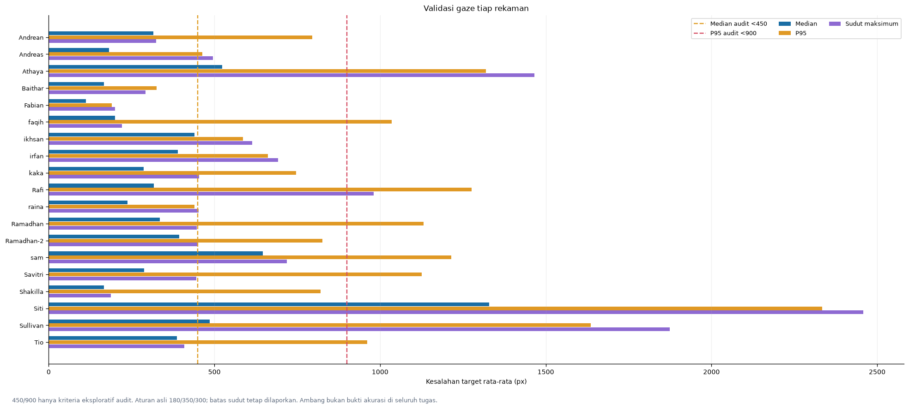
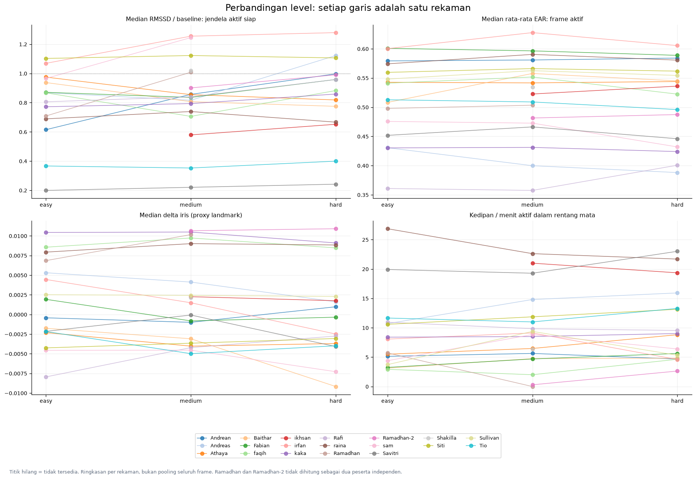
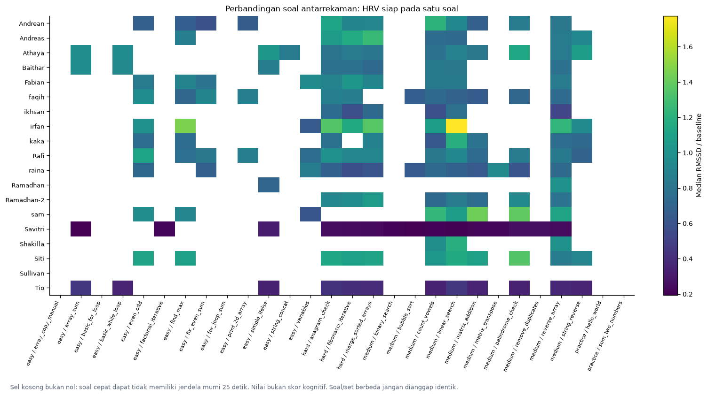

19 rekaman; 18 peserta; 859,234 frame mata; 6,689 jendela HRV tugas.
Salinan rekaman tidak dihitung ulang: Baithar - Copy → Baithar. Lihat inventaris sumber dan alasan pemilihan.
Ringkasan waktu mata memakai bin 5 detik. Label dihitung dari ledger akhir menggunakan ID sesi asli. Waktu nol memakai kedua sensor siap, atau frame mata pertama bila waktu kesiapan tidak tersedia.
53,066 frame · 399 jendela HRV
HRV siap 98.5% · 16 grafik
52,675 frame · 404 jendela HRV
HRV siap 99.5% · 16 grafik
50,944 frame · 399 jendela HRV
HRV siap 98.2% · 16 grafik
48,803 frame · 426 jendela HRV
HRV siap 95.5% · 14 grafik
49,388 frame · 405 jendela HRV
HRV siap 99.8% · 14 grafik
51,244 frame · 409 jendela HRV
HRV siap 96.6% · 16 grafik
43,585 frame · 335 jendela HRV
HRV siap 92.8% · 13 grafik
55,656 frame · 407 jendela HRV
HRV siap 97.1% · 14 grafik
64,053 frame · 452 jendela HRV
HRV siap 73.2% · 16 grafik
51,928 frame · 411 jendela HRV
HRV siap 94.9% · 16 grafik
43,251 frame · 397 jendela HRV
HRV siap 98.7% · 16 grafik
8,855 frame · 63 jendela HRV
HRV siap 93.7% · 14 grafik
46,113 frame · 348 jendela HRV
HRV siap 96.3% · 14 grafik
30,471 frame · 210 jendela HRV
HRV siap 95.2% · 16 grafik
43,716 frame · 408 jendela HRV
HRV siap 99.3% · 17 grafik
23,813 frame · 155 jendela HRV
HRV siap 95.5% · 13 grafik
50,341 frame · 397 jendela HRV
HRV siap 83.1% · 16 grafik
32,852 frame · 233 jendela HRV
HRV siap 0.0% · 17 grafik
58,480 frame · 431 jendela HRV
HRV siap 88.6% · 16 grafik
| subject_session | participant_group | original_session_id | eye_frames | active_eye_frames | on_screen_active_pct | clipping_active_pct_valid | ear_pair_active_available_pct | iris_active_available_pct | hrv_task_windows | hrv_ready_windows | hrv_ready_pct | ready_coding_level_windows | ready_single_question_windows | held_out_median_px | held_out_p95_px | held_out_max_corner_px | held_out_original_passed | baseline_rmssd_ms | questions_in_ledger | plot_count |
|---|---|---|---|---|---|---|---|---|---|---|---|---|---|---|---|---|---|---|---|---|
| Andrean | Andrean | 20261030_101138_P01_coding_task | 53066 | 45998 | 91.076 | 1.614 | 99.989 | 95.509 | 399 | 393 | 98.496 | 247 | 235 | 315.160 | 795.285 | 324.157 | False | 37.769 | 15 | 16 |
| Andreas | Andreas | 20261030_105505_P01_coding_task | 52675 | 43200 | 64.083 | 17.357 | 100.000 | 92.968 | 404 | 402 | 99.505 | 180 | 171 | 182.284 | 463.223 | 495.225 | False | 20.461 | 13 | 16 |
| Athaya | Athaya | 20261028_100710_P01_coding_task | 50944 | 42116 | 80.577 | 5.326 | 100.000 | 91.303 | 399 | 392 | 98.246 | 172 | 157 | 523.843 | 1319.909 | 1465.920 | False | 52.758 | 16 | 16 |
| Baithar | Baithar | 20261030_151950_P01_coding_task | 48803 | 37992 | 49.434 | 32.950 | 100.000 | 96.394 | 426 | 407 | 95.540 | 185 | 185 | 166.121 | 325.894 | 292.745 | True | 53.924 | 11 | 14 |
| Fabian | Fabian | 20261030_141412_P01_coding_task | 49388 | 40898 | 90.156 | 2.334 | 100.000 | 93.239 | 405 | 404 | 99.753 | 248 | 241 | 111.731 | 189.740 | 200.748 | True | 38.148 | 10 | 14 |
| faqih | faqih | 20261028_084341_P01_coding_task | 51244 | 43814 | 83.535 | 4.921 | 99.680 | 92.753 | 409 | 395 | 96.577 | 238 | 226 | 200.653 | 1035.128 | 221.527 | False | 41.852 | 16 | 16 |
| ikhsan | ikhsan | 20261028_145744_P01_coding_task | 43585 | 40268 | 68.014 | 12.727 | 100.000 | 85.092 | 335 | 311 | 92.836 | 272 | 253 | 439.197 | 585.619 | 614.366 | False | 53.217 | 6 | 13 |
| irfan | irfan | 20261028_133037_P01_coding_task | 55656 | 45856 | 10.348 | 67.535 | 100.000 | 56.411 | 407 | 395 | 97.052 | 218 | 207 | 389.501 | 661.390 | 692.795 | False | 30.287 | 11 | 14 |
| kaka | kaka | 20261027_151755_P01_coding_task | 64053 | 50963 | 71.572 | 6.386 | 99.998 | 84.069 | 452 | 331 | 73.230 | 133 | 127 | 287.103 | 747.042 | 454.251 | False | 24.245 | 15 | 16 |
| Rafi | Rafi | 20261028_141228_P01_coding_task | 51928 | 46260 | 84.256 | 3.192 | 100.000 | 94.125 | 411 | 390 | 94.891 | 277 | 273 | 317.239 | 1275.947 | 980.778 | False | 45.516 | 15 | 16 |
| raina | raina | 20261028_153314_P01_coding_task | 43251 | 34121 | 55.470 | 9.398 | 99.933 | 68.641 | 397 | 392 | 98.741 | 133 | 111 | 238.201 | 439.250 | 452.362 | False | 29.453 | 17 | 16 |
| Ramadhan | Ramadhan | 20261028_113120_P01_coding_task | 8855 | 7179 | 73.088 | 6.436 | 100.000 | 95.236 | 63 | 59 | 93.651 | 6 | 6 | 335.834 | 1130.938 | 446.653 | False | 33.422 | 8 | 14 |
| Ramadhan-2 | Ramadhan | 20261028_114156_P01_coding_task | 46113 | 34986 | 16.206 | 71.724 | 100.000 | 94.918 | 348 | 335 | 96.264 | 136 | 136 | 394.032 | 825.512 | 449.266 | False | 32.802 | 10 | 14 |
| sam | sam | 20261026_143707_P01_coding_task | 30471 | 28583 | 70.454 | 12.635 | 99.885 | 89.270 | 210 | 200 | 95.238 | 176 | 125 | 645.666 | 1214.980 | 719.305 | False | 28.310 | 14 | 16 |
| Savitri | Savitri | 20261030_132625_P01_coding_task | 43716 | 35100 | 78.536 | 6.666 | 100.000 | 90.439 | 408 | 405 | 99.265 | 206 | 174 | 287.553 | 1125.484 | 445.294 | False | 38.157 | 19 | 17 |
| Shakilla | Shakilla | 20261028_094956_P01_coding_task | 23813 | 17769 | 85.756 | 4.174 | 100.000 | 92.757 | 155 | 148 | 95.484 | 88 | 88 | 166.469 | 820.151 | 187.332 | False | 44.492 | 3 | 13 |
| Siti | Siti | 20261028_104726_P01_coding_task | 50341 | 40741 | 12.336 | 76.352 | 100.000 | 87.882 | 397 | 330 | 83.123 | 211 | 211 | 1329.651 | 2334.202 | 2457.738 | False | 33.522 | 13 | 16 |
| Sullivan | Sullivan | 20261028_122016_P01_coding_task | 32852 | 29005 | 26.640 | 55.195 | 100.000 | 90.960 | 233 | 0 | 0.000 | 0 | 0 | 486.521 | 1636.349 | 1874.580 | False | 12.459 | 20 | 17 |
| Tio | Tio | 20261027_142523_P01_coding_task | 58480 | 46672 | 76.667 | 7.929 | 100.000 | 91.391 | 431 | 382 | 88.631 | 205 | 203 | 386.263 | 961.448 | 408.544 | False | 39.171 | 16 | 16 |
CSV: ringkasan peserta · fitur per level · fitur per soal · manifest sumber



